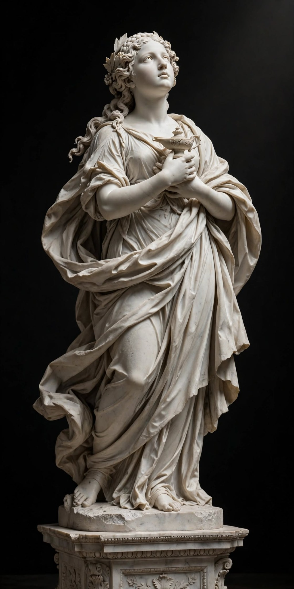

Lux Animae – Ruhun Işığı
- Yapan
- Atölye di Troçki, Michelangelo ekolünden
- Tarih
- 1498
- Anlamı
- Karanlıkta kalan insanlığın bilgiye ve umuda yönelişini temsil eder. Elindeki kandil, Rönesans’ın mottosu olan “karanlıktan aydınlığa” geçişi; yukarıya bakan gözleri ise Tanrısal olana özlemi simgeler. Dalgalı drapeler ruhun hareketliliğini gösterir.
- Kısa Yorum
- Mermerin soğukluğunda bile sıcaklık hissediliyor. Işık, taştan değil insandan geliyor.